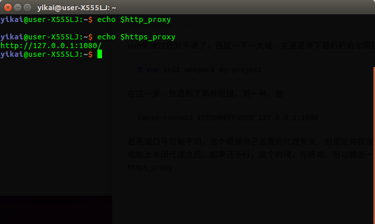

才装的双系统，打算从window转Ubuntu…
我的前端一直很辣鸡，最近也想学一波，所以有了进今天的这篇博客…
俗话说得好，万事开头难，中间难，结尾难…我学Vue的第一步，就让我从入门都不算到放弃…
vue安装过程就不说了，百度一下一大堆，主要是说下最后初始化项目这一步
1 | vue init webpack my-project |
在这一步，我遇到了两种报错，第一种，是
1 | cause=connect ECONNREFFUSED 127.0.0.1:1080 |
后面端口号可能不同，这个根据自己设置的代理有关，但是这种错误，跟代理设置有关，在电脑上关闭代理之后，如果还不行，这个时候，在终端，可以输出一下http_proxy和https_proxy

可以看到我https_proxy有个127.0.0.1:1080，这个时候
1 | unset https_proxy |
把代理删掉，再试一下就好了
另一种报错，是网络不能访问github，这个时候，最好使用浏览器访问一下github，如果不行，那就要设置代理～